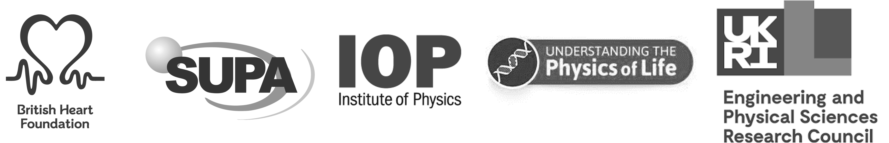

August 26th - 27th 2021
University of Glasgow, Glasgow, Scotland
University of Glasgow, Glasgow, Scotland
| Home | Abstracts | Program | Speakers | Directions | Conduct |
We are excited to announce the NOTICE2020 webinar! On Friday August 28th join us for three fantastic talks by Chris Xu, Gil Bub and Ahmed Abdelfattah. You can register for free via our Eventbrite page. Join us on Friday 28th of August 2020 for three exciting talks from our North American keynote speakers:
| 3:30 pm CET | Pushing the limits of multiphoton imaging |
| Chris Xu (Cornell University) | |
| 4.00 pm CET | Genetically encoded sensors for optical monitoring of membrane voltage |
| Ahmed Abdelfattah (HHMI Janelia Farm Research Campus) | |
| 4:30 pm CET | New approaches for imaging cardiac activity in-vitro and ex-vivo |
| Gil Bub (McGill University, Montreal Canada) | |
In the meantime, to bridge the long wait, we are excited to announce a NOTICE online symposium. Stay posted for more information to follow soon.
NOTICE2021 is a small-scale symposium on novel optical technology for cardiac electrophysiology and aims to create a synergy between the strongest proponents of optical imaging, microscopy and manipulation technology applied to investigating the heart.
The workshop covers a broad range of topic from studying electrical activity, mechanical function and heart structure from the cellular scale to whole organ level. Topics range from super resolution techniques to coarse-resolution whole heart mapping, from imaging cardiac activity and correlating this activity to underlying structure to manipulating cardiac activity with optogenetics.
NOTICE2021 is the second instalment, after our successful inauguration event NOTICE 2018 in Florence. You can help us make this meeting a success by downloading and distributing this flyer.
Scotland has voted overwhelmingly to remain in the EU and remains an open, vibrant and out-ward looking country. While Scottish weather is notoriously unpredictable and we cannot guarantee a dry welcome, it will most certainly be warm.
| Leonardo Sacconi LENS |
Gil Bub McGill University |
Godfrey Smith University of Glasgow |
Caroline Müllenbroich University of Glasgow |
| Caroline Müllenbroich Physics & Astronomy |
Godfrey Smith Cardiovascular & Medical Sciences |
Eline Huethorst Cardiovascular & Medical Sciences |
Ana Costa Cardiovascular & Medical Sciences |
Vytautas Zickus Physics & Astronomy |
Lucrezia Cester Physics & Astronomy |
NOTICE is proudly funded by the British Heart Foundation, Scottish Universities Physics Alliance (SUPA), The Engineering and Physical Sciences Research Council (EPSRC), Extreme Light, Scottish Universities Life Sciences Alliance, Institute of Physics (IOP) Optical Group, and the Company of Biologists. We are further grateful to our industrial sponsors: Cairn Research, Chromacity, Scientifica and Methods and Protocols.
| © Caroline Müllenbroich | Website template by Mike Pierce | Banner photo by Ian Dick | Logo by Von Spree |
 |